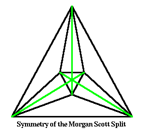
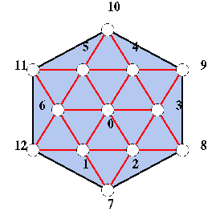
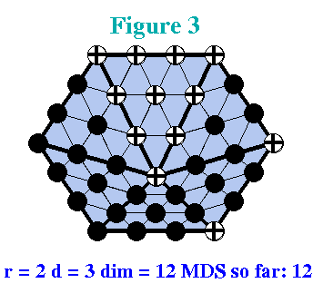
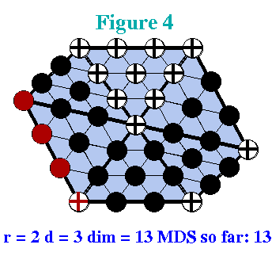
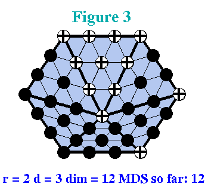
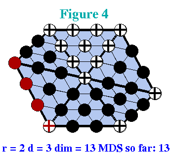

Unlike in the univariate case, the precise location of the vertices matters for the dimension of a spline space. The simplest example is that of a singular vertex. A singular vertex is an interior vertex of degree 4 where the four edges form two parallel pairs. The two figures nearby illustrate minimal determining sets for r=1 and d=2 for a singular vertex and a generic (non-singular) vertex of degree 4.
As in all examples, points in the minimal determining set are labeled with plus signs. Note that there are eight points in the minimal determining set for the singular vertex and only seven in the set for the generic vertex.
It is easy to see how this comes about geometrically. Because of the geometry of the situation the quadrilaterals containing the boundary vertices have degenerated into triangles and the requirement that they be planar has degenerated into the requirement that the three control points at the base of the triangles be collinear! The choice of the coefficient at each boundary vertex is arbitrary since the triangle can pivot around its base and still be planar. The boundary vertices therefore must be contained in any minimal determining set, and selecting them will not imply any other coefficients to be determined.
In the figure showing the singular vertex the boundary
vertices are marked in red. Selecting the green points
determines the points marked as full green circles. Finally,
selecting the blue point determines the blue full circles.
Here is a subtlety: The southwest blue full circle is
determined in two different ways: going clockwise from the
blue cross, and going counterclockwise from the blue cross.
In the generic case this amounts to an additional
consistency condition which reduces the number of points in
the minimal determining set by 1. However, in the case of a
singular vertex the two smoothness conditions are always
consistent! You can see this geometrically by assigning
zero to all points in the minimal determining set except the
blue one. Then consider assigning a (possibly non-zero)
value to the blue plus sign and think of changing that
value. This amounts to moving the corresponding control
point up and down. Moving it up results in a lowering
requirement on the southeast blue full circle. Moving that
point down results in a lifting requirement on the southwest
blue full circle. Continuing clockwise we obtain a lowering
requirement on the northwest blue full circle which in turn
generates a lifting requirement on the blue plus sign. So
the lifting action on that point causes a lifting
requirement, and because of the geometry the action and the
requirement are consistent. We can thus assign an arbitrary
value to the point marked with a blue plus sign.

A more complicated example was discovered by Morgan and Scott in 1975. The triangulation is known as the Morgan-Scott Split. It consists of seven triangles as indicated in the two figures nearby.
The Morgan-Scott split exhibits a different and more subtle kind of symmetry. It is symmetric if the three lines from a boundary vertex to the opposite interior vertex intersect in the same point as illustrated in the nearby figure on the left. The green lines connect opposite vertices, they are not part of the triangulation!
As illustrated in the Figure, a symmetric version of the Morgan-Scott split can be obtained for example by denoting the boundary vertices of the triangulation by V 0 , V 1, V 2 , defining the interior vertices by
V 3 = (V 0 + 2V 1 + 2V 2 )/5
V 4 = (2V 0 + V 1 + 2V 2 )/5
V 5 = (2V 0 + 2V 1 + V 2 )/5 
It is apparent from the Figures that for r=1 and d=2 the dimensions of S for the symmetric Morgan-Scott Split is 7 and for the generic Morgan-Scott split it is 6.
There is a qualitative difference in the variation of the dimension caused by a singular vertex and by the Morgan-Scott split. The increased dimension in the case of the singular vertex persists for higher values of d . In other words, for r=1 and d>1 the dimension of S is always larger by 1 if the interior vertex is singular than if it is not. On the other hand, for the Morgan-Scott split, when d>2 and r=1 the dimension of S is the same whether or not the split is symmetric.
Dwight Diener ( Instability in the dimension of spaces of bivariate piecewise polynomials of degree 2r and smoothness order r. SIMA J. Numer. Anal., 27 (1990), pp. 543-551) showed that the dimension is always greater by 1 on the symmetric split in the case that d =2r.
The figure nearby shows a hexagonal triangulation whose various configurations exhibit numerous discrepancies between the true dimension and Schumaker's lower bound. Click here or on the picture to find out more about dimensions on this triangulation.
In the case that r=1 and d=2 many configurations are known for which the dimension of S depends on the geometry of the triangulation. In the case that d>3 it is known that singular vertices are the only configurations for which the geometry is variable. In the case that d=3 singular vertices are the only known configurations, and it is not known if there are any others. The problem of whether there any other configurations is very difficult. It has been recognized and open since Morgan and Scott wrote their famous 1975 paper. Many people, including myself and Larry Schumaker have been trying to solve it for many years, and so far it has resisted all solution attempts. See this page for more information.
In our paper on C 1 quartics (Number 8 in the bibliography) we say an interior vertex is confinable if there is a minimal determining set for r=1 and d=2 that includes the boundary vertices of the star. We know just one example for a non-confinable vertex, namely the center of a regular hexagon.
We also call an interior vertex defective if some of the edges attached to it are parallel. It is well known that this causes the dimension of S to increase beyond its generic value.
The figures nearby illustrate the effects of defectiveness and non-confinability:

 



[25-Mar-1999]